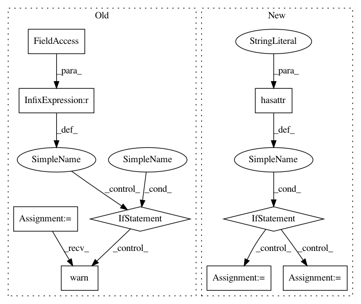

f9dd2e3636db61ee1b4d32ee4f494fd9e71adc12,cleverhans/attacks.py,Attack,generate_np,#Attack#Any#Any#,57
Before Change
:param params: Parameter dictionary used by child classes.
:return: A Numpy array holding the adversarial examples.
if self.default_graph is None:
error_string = "The attack symbolic graph was not generated."
raise Exception(error_string)
if self.nb_calls_generate > 1:
warnings.warn("Attack was generated symbolically multiple "
"times, using graph defined by first call.")
// Define batch_eval function common to both backends
eval_params = {"batch_size": params["batch_size"]}
if self.back == "tf":
from .utils_tf import batch_eval
After Change
import tensorflow as tf
// Generate this attack"s graph if it hasn"t been done previously
if not hasattr(self, "_x") and not hasattr(self, "_x_adv"):
input_shape = list(X.shape)
input_shape[0] = None
self._x = tf.placeholder(tf.float32, shape=input_shape)
self._x_adv = self.generate(self._x)
// This indicates loop calls between generate and generate_np
if hasattr(self, "_x") and not hasattr(self, "_x_adv"):
error_string = "No symbolic or numeric implementation of attack."
raise NotImplementedError(error_string)
In pattern: SUPERPATTERN
Frequency: 3
Non-data size: 9
Instances
Project Name: tensorflow/cleverhans
Commit Name: f9dd2e3636db61ee1b4d32ee4f494fd9e71adc12
Time: 2017-03-29
Author: ngp5056@cse.psu.edu
File Name: cleverhans/attacks.py
Class Name: Attack
Method Name: generate_np
Project Name: tensorflow/cleverhans
Commit Name: f9dd2e3636db61ee1b4d32ee4f494fd9e71adc12
Time: 2017-03-29
Author: ngp5056@cse.psu.edu
File Name: cleverhans/attacks.py
Class Name: FastGradientMethod
Method Name: generate_np
Project Name: brian-team/brian2
Commit Name: ee3356fb661d37f06ef09691e8888b97cbcf9209
Time: 2015-03-16
Author: marcel.stimberg@inserm.fr
File Name: brian2/codegen/generators/cpp_generator.py
Class Name: CPPCodeGenerator
Method Name: determine_keywords